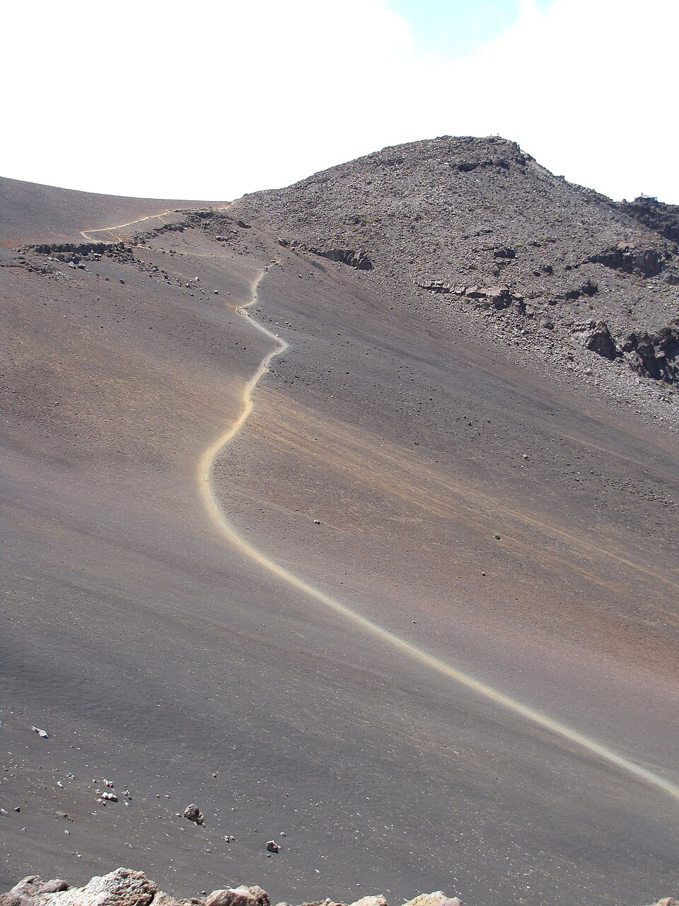

Keoneheʻeheʻe Trail (Sliding Sands Trail)
Place: Keoneheʻeheʻe Trail, Haleakalā National Park, Maui
Type: Historic trail / wilderness route / cultural landscape
Story it tells: A trail whose Hawaiian name describes the loose volcanic sands underfoot and whose history spans Native Hawaiian traditions, ranching, military training, and modern exploration of Haleakalā.

Keoneheʻeheʻe Trail, commonly known as Sliding Sands Trail, is one of the most recognizable routes within Haleakalā National Park. Beginning near the summit at roughly 9,740 feet above sea level, the trail descends nearly 2,500 vertical feet into the crater floor. Many hikers use the route as part of a cross-crater journey, descending via Keoneheʻeheʻe before exiting through the Halemauʻu Trail, also known as the Switchbacks, on the opposite side of the volcano.
The Hawaiian name describes the experience of walking the trail. Ke one means "the sand," while heʻeheʻe conveys the idea of repeated slipping or sliding. Together, the name is commonly translated as "sliding sands," a reference to the loose volcanic cinders that shift beneath each step. The traditional name appeared on maps as early as the nineteenth century and later became the basis for the trail's English name.
Before it became a recreational hike, Keoneheʻeheʻe provided access into the sacred interior of Haleakalā. Native Hawaiians traveled through the crater for ceremonies, resource gathering, navigation, and other cultural practices. The route connected travelers to areas associated with piko ceremonies, basalt quarrying, astronomical observation, and places of cultural significance hidden among the crater's cinder cones, cliffs, and lava formations.
During the ranching era, portions of the route were used to move cattle across the mountain. Between 1934 and 1941, Civilian Conservation Corps crews rebuilt and improved much of the trail, creating the managed pathway used today. During World War II, military units training on Maui also utilized the crater and its loose volcanic terrain to prepare soldiers for the harsh conditions they would encounter on Pacific battlefields.
Today, Keoneheʻeheʻe remains one of Hawaiʻi's most iconic trails. Visitors descend through colorful cinder deserts and volcanic landscapes while following a route that has connected people to Haleakalā for generations.